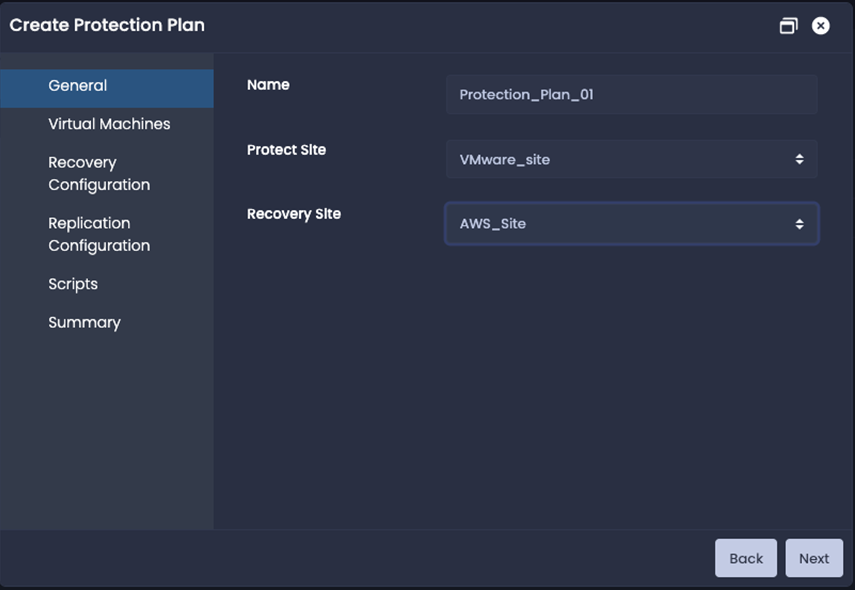
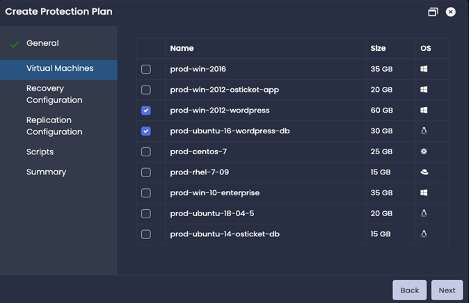
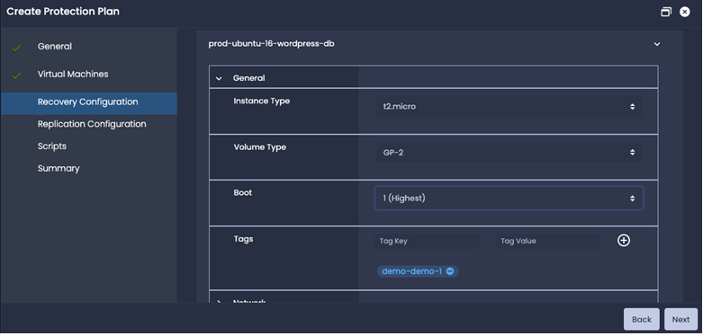
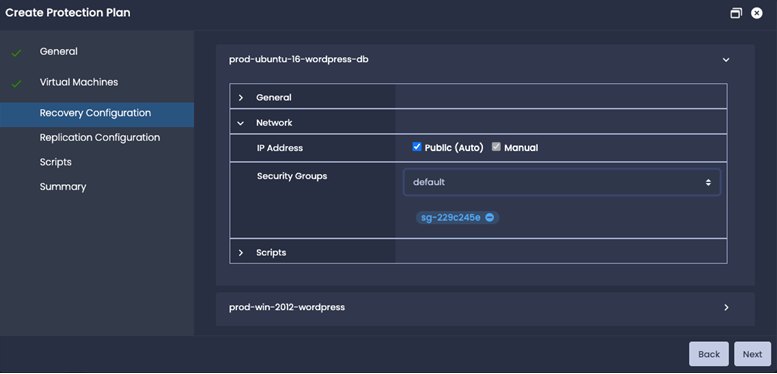
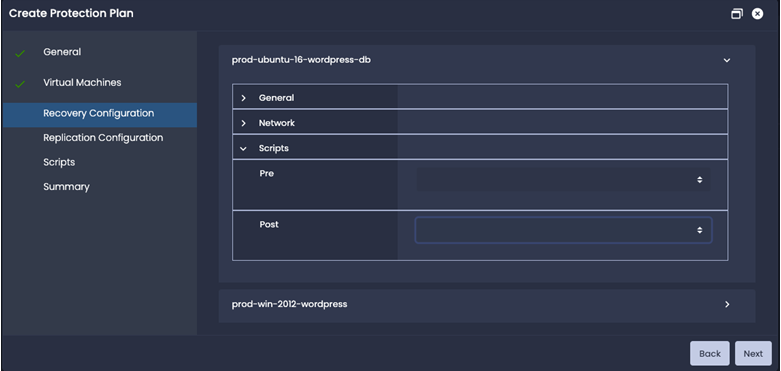
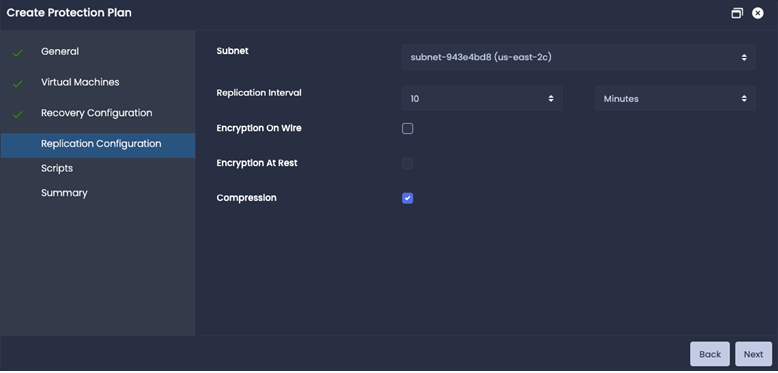
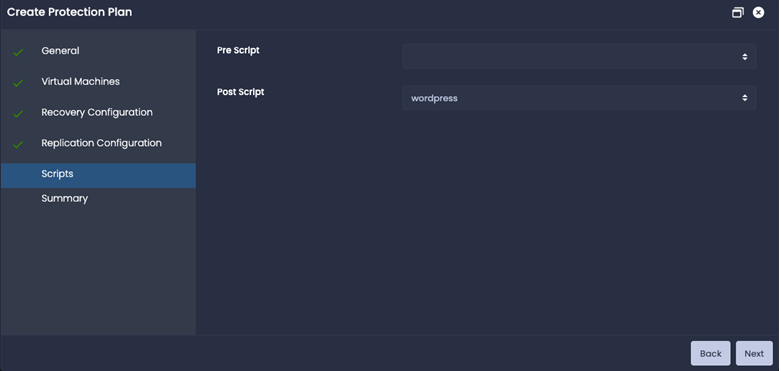
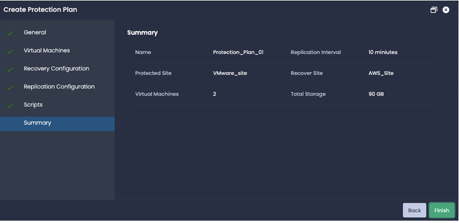

Create Protection Plan
Prerequisite
VMware platform:
- VMware tools need to be installed in all the Virtual Machines.
- CBT (Change block tracking) need to enabled for all the Virtual Machines.
To create a new protection plan, click on + New and create protection plan windows will pop-up.
General
| Name | Name of the protection plan. |
| Protect Site | Source protection site. |
| Recovery Site | Destination recovery site. |
Click next for the next section.
Virtual Machines
Select the virtual machines to be protect and click next.
Recovery Configuration
Provide the virtual machine specific recover configuration which will be used for creation of instance on recovery site.
General
| Instance Type | Instance type on cloud site - Example t2.micro on AWS or n1-standard-1 on GCP. |
| Volume Type | Instance volume type on cloud site - Example GP-2 on AWS or standard on GCP. |
| Boot | Boot order in which this instance will start. 1 is highest and 5 is lowest. |
| Tags | Instance tags. |
Network

| IP Address | Public IP for the instance in cloud site. (Manual will be supported in next release) |
| Security Groups | Security Groups in the cloud site. Select multiple if required. For GCP this will be firewall target tags. |
Scripts

| Pre | Pre scripts which will run before instance start on recovery site. |
| Post | Post scripts which will run after instance start on recovery site. |
Replication Configuration

| Subnet | subnet ID which will assigned to all the instances in this protection plan. |
| Replication interval | Time interval in which the virtual machine changed data will be replicated. |
| Encryption On Wire | Data encryption while transferring from source to destination. |
| Encryption On Rest | Data encryption on writing the data to the instance volume. |
| Compression | Data compression while transferring from source to destination. |
Scripts

| Pre Script | Pre scripts which will run before recovery workflow for this protection plan. |
| Post Script | Post scripts which will run after all the instances are recovered on recovery site. |
Summary
Review the summary for the protection plan and click finish to configure the protection plan. On successful configuration, replication jobs will start for the virtual machines selected for this protection plan.